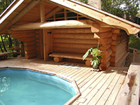

Купить срубы домов, бань под ключ во Владимире недорого
Многие мечтают о собственном жилье, построенном из экологически
чистых материалов. Мы готовы воплотить ваши мечты в реальность
и предлагаем свои услуги по строительству домов, в качестве
материала для которых используются надежные срубы. Мифы о том,
что дерево легко подвергается негативным воздействиям внешних
факторов и может быть поражено паразитами - давно развеяны,
поскольку вся наша продукция обработанана специальными
средствами, позволяющими надежно защитить срубы и улучшить их
свойства.
Дома из сруба отличаются долговечностью и экологичностью. Такие строения могут простоять
десятки лет, не требуя при этом ремонтных работ. В таком жилище естественным путем
будет поддерживаться комфортная атмосфера - летом в доме будет прохладно, а зимой будет
всегда тепло. Если вы решили построить собственный дом и вам необходимы качественные срубы под
ключ - обратитесь к нам.
Стадии строительства
 Первая заключается в следующем:
Первая заключается в следующем:
создание ленточного или столбчатого фундамента;
заготовка материала;
установление бревен на подготовленный фундамент;
устройство крыши и последующее ее покрытие рубероидом.
Когда установка срубов завершена, стоит подождать некоторое
время для окончательной усадки конструкции. Если строительство
проводится летом, то ждать усадки придется около одного года. В
случае работ зимой, для полноценной усадки достаточно подождать
всего лишь полгода. Сруб, заготовленный в зимний период, имеет некоторые преимущества - он
не подвержен растрескиванию, повреждению различными микроорганизмами и гораздо быстрее
усаживается.
Второй этап - установление дверей, окон, перегородок, полов, внутрення и внешняя отделка стен,
а также проведение необходимых коммуникационных систем. Однако, данные работы
необходимо выполнять только после полной усадки дома. Через год после установки каркаса
можно приступать к внешней отделке стен - их можно обшить вагонкой, панелями, сайдингом или
любыми другими отделочными материалами.